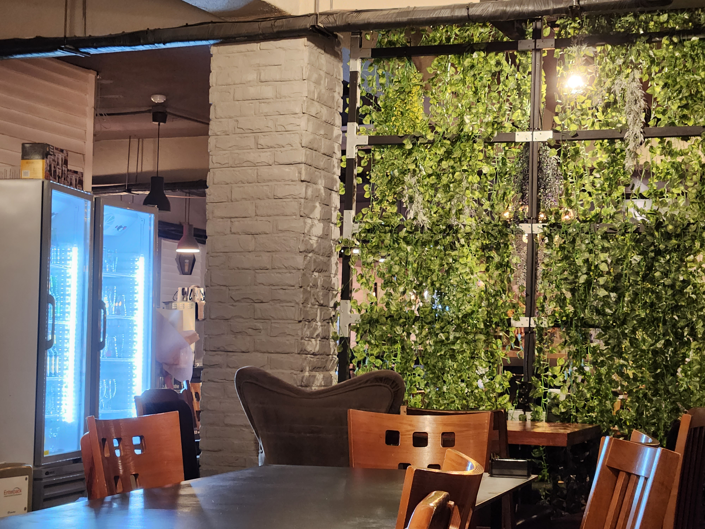

#맨스필드 카페&펍

위치: 서울특별시 성동구 마조로 27 대광빌딩 2층
영업시간: 매일 07:00~01:00
주요 메뉴: 아메리카노(3.9) / 카페라떼(4.2) / 에이드(5.0)
왕십리역 6번출구 근처에 있는 크고 넓은 카페. 카페&펍이라는 이름에 걸맞게 맥주와 피자도 판매하고 있다. 새벽 1시까지 운영하기 때문에 밤늦게까지 과제를 한 후 자취방으로 복귀하기
좋다.